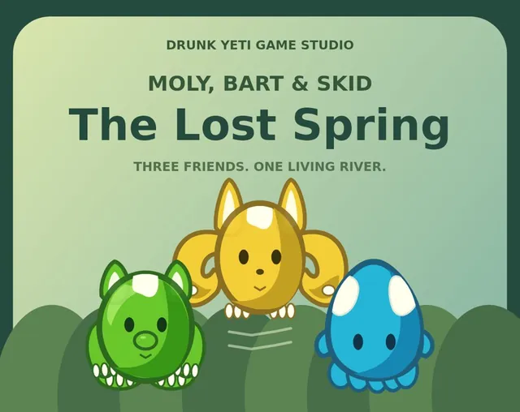
Adventure
Moly, Bart & Skid
Three friends explore a living river in a character-switching puzzle adventure.
View project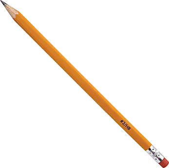
Reduced-motion and data-saving preferences are respected.
Michael Andrew Lambert Jr. · Colorado
I’m 3ichael 7ambert. I turn ideas into drawings, photographs, music, games, and stories.
From a pencil on paper to a world you can play in, this is a collection of the things I make—and the places my imagination takes me.
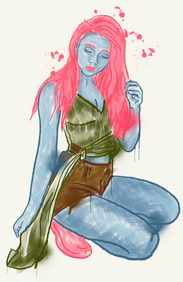
01 / The visual notebook
Photography, drawn portraits, invented worlds, and experiments in color. Tap any image, then scroll through the full-screen collection.
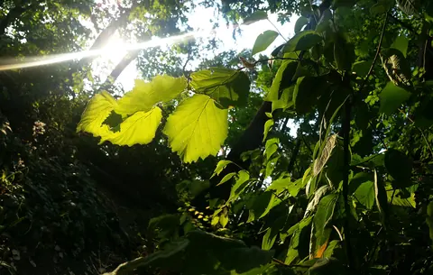
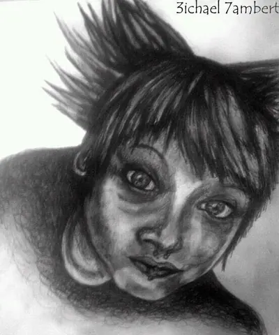
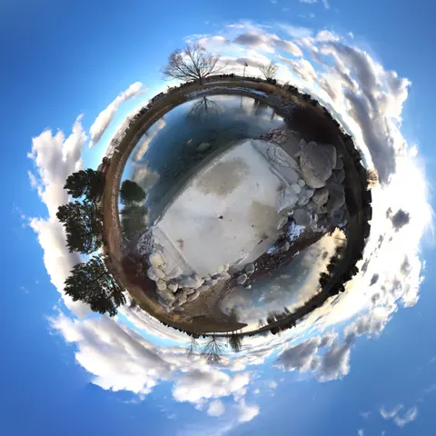
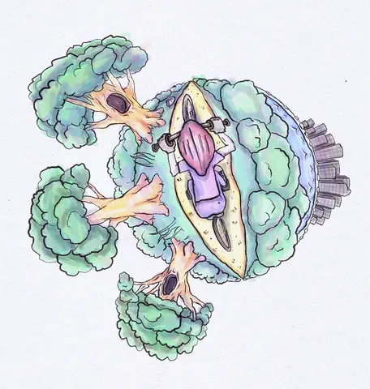
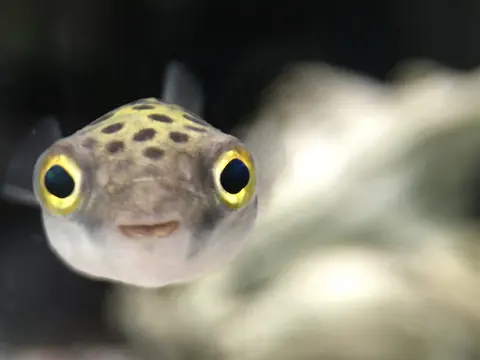
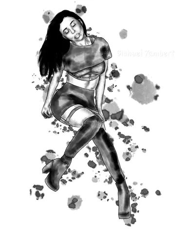
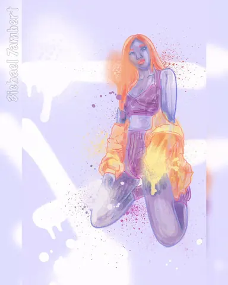
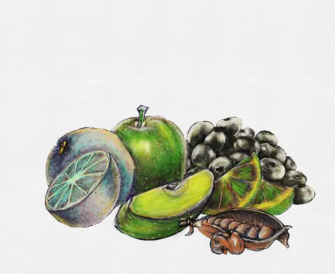
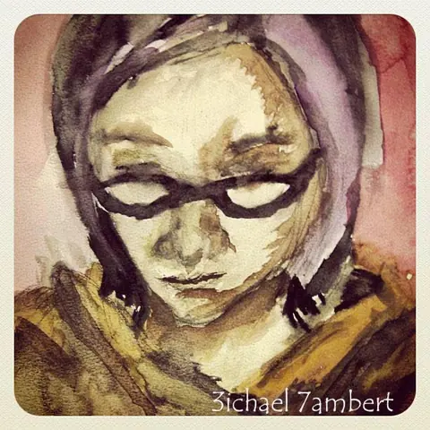
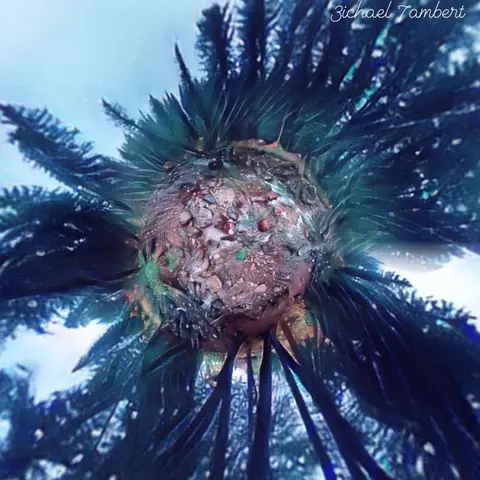
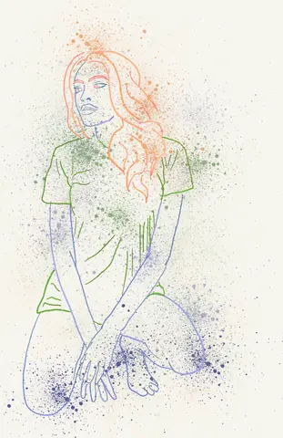
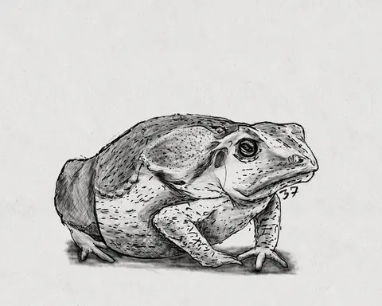
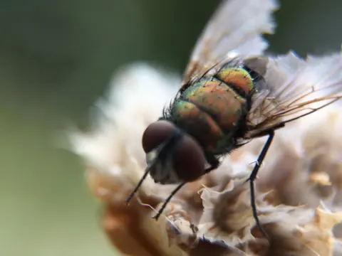
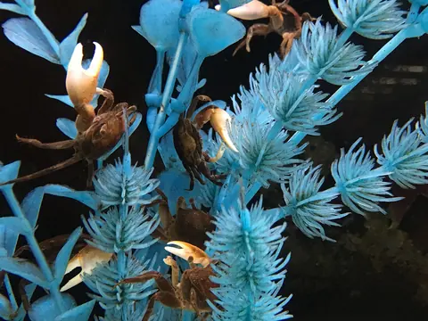
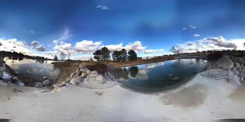
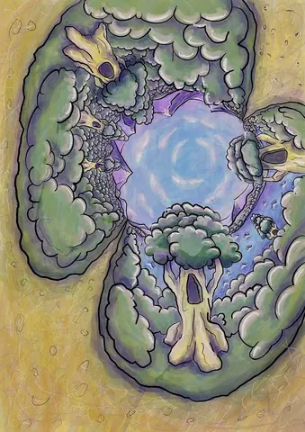
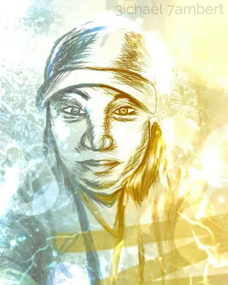
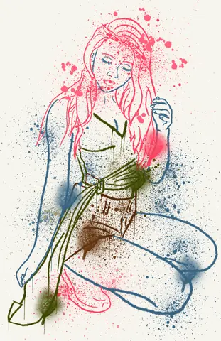
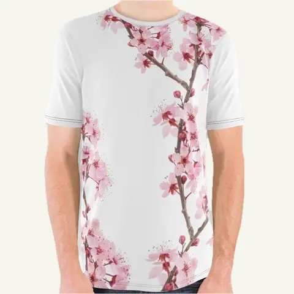
02 / Playable worlds
Independent games from my original catalog and Drunk Yeti. Explore the worlds, meet the characters, and find something to play.

Three friends explore a living river in a character-switching puzzle adventure.
View project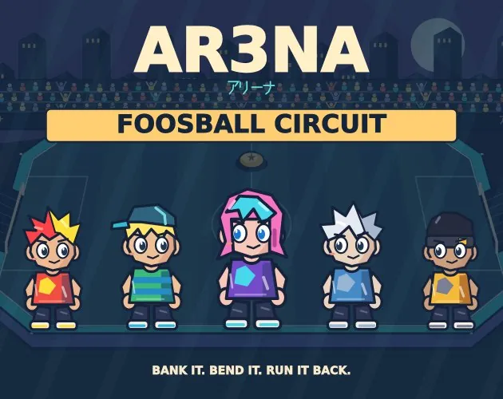
Spring-flick foosball, unusual tables, and local versus play.
View project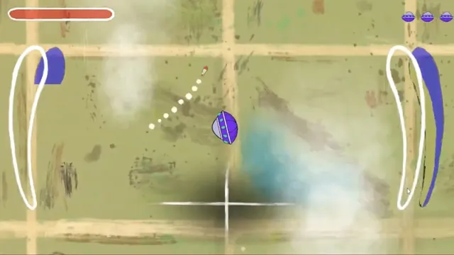
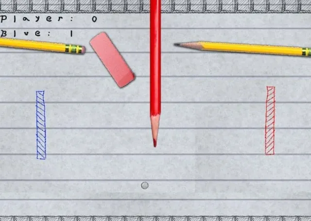
03 / Sound & story
Songs, instrumental worlds, game soundtracks, and conversations. Choose a record or artist and listen in your favorite place.
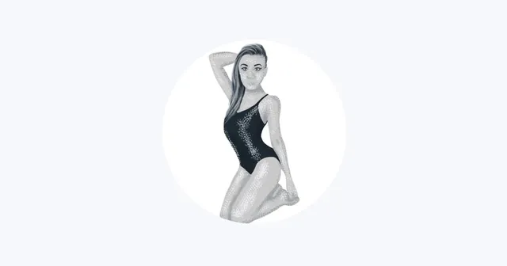
Electronic music, orchestral experiments, and songs across a growing catalog.
Listen / explore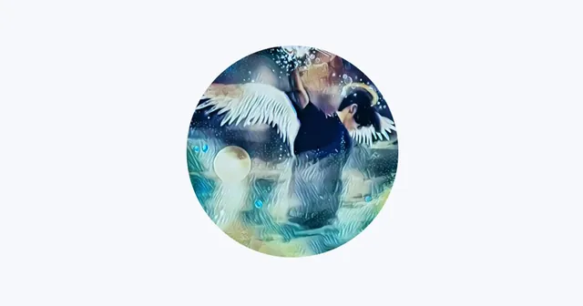
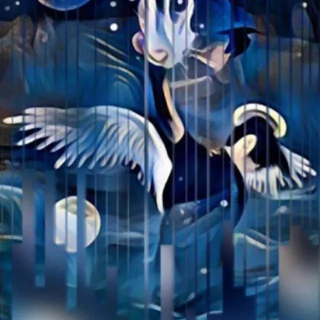
Conversations about art, music, and the experiences behind the work.
Listen / explore04 / The bookshelf
Art collections, photography, poetry, memoir, and stories for younger readers. Browse by subject and choose an edition at the retailer.
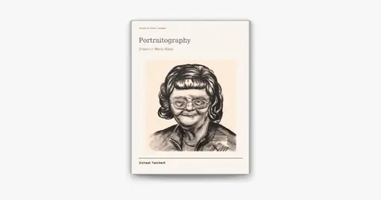
Portraits and figure studies across graphite, ink, paint, and digital color.
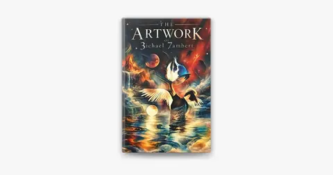
A reflective look at nearly two decades of work across traditional, digital, and interactive media.
A personal story of changing identities, creative life, and reinvention.
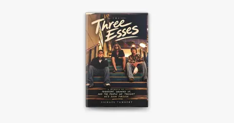
Childhood friendship in Aurora, and the distance and changes that follow.
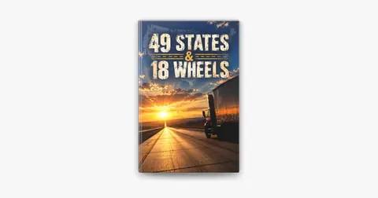
A book by Michael Andrew Lambert, available through Apple Books.
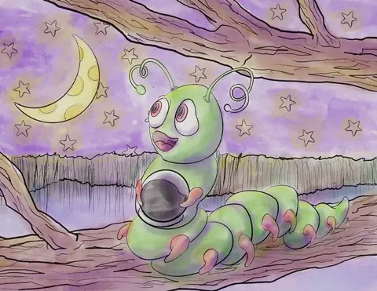
A little caterpillar faces first-day-of-school nerves, with a moonlit adventure and a new friend.
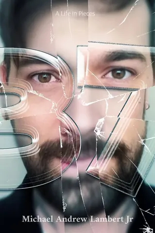
A personal account of family, resilience, creativity, and the search for belonging.
Poetry and reflection from the Memorandum in a Cruet collection.
Seattle seen through the Plastic Photography series.
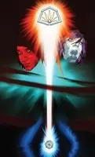
The deluxe edition of the Memorandum in a Cruet collection.
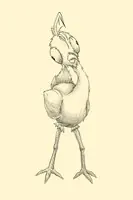
Drawing studies and illustrations from the 2023 Inktober project.
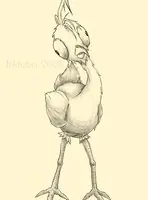
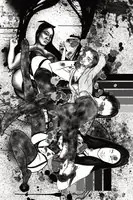
An exploration of the female figure through ink and drawn line.
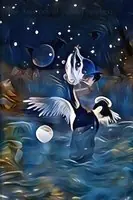
A visual collection by Michael Andrew Lambert Jr.
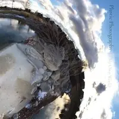
Photographic transformations from the In My Own World collection.
Sheet music from Spread Love Like Wildfire.
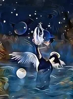
A visual collection by Michael Andrew Lambert Jr.
Formats, prices, and availability are listed by each retailer.
05 / Take a little art with you
Artwork to wear, hang, collect, or create with. Find the right shop for what you’re looking for.
My clothing design work brings illustration, abstract pattern, and all-over color to wearable forms.
See the apparel work →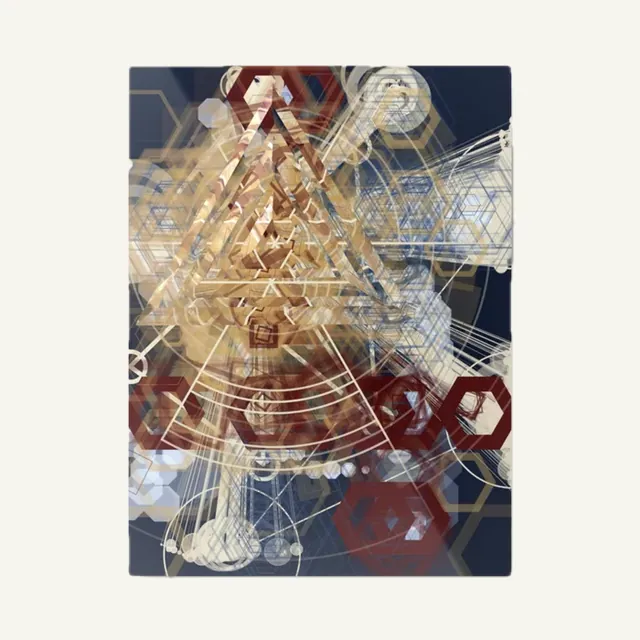
Original illustrations, photographs, and colorful designs on prints, apparel, stickers, and more.
Visit shop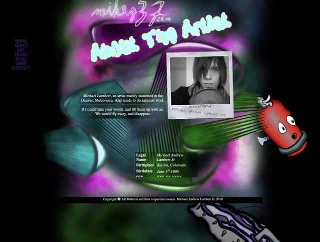
Explore Drunk Yeti’s games, creative software, asset collections, and music.
Visit shop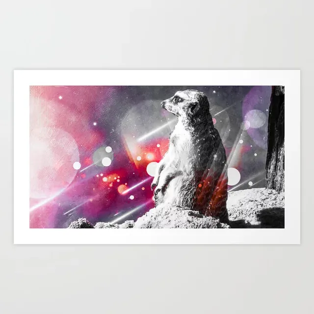
Browse the original digital-resource storefront for drawing and music-making tools.
Visit shop06 / Behind the work
I work across art, software, music, and storytelling. Explore my professional background, education, and projects below.
South College - Est. 2026
Certificate: Software Engineer Certificate
700+ hours of hands-on course material, with 1:1 industry expert mentor oversight, and completion of 4 in-depth portfolio projects.
Notable Projects:
Certificate: Web Development
I excelled in Web Design I & II as well as Java I and Java II, where I mastered PHP, ActionScript, JavaScript, HTML, and CSS. Going beyond the basics, I incorporated music into my static-era websites and pioneered disjoined rollovers, enhancing user experience and showcasing my commitment to innovative design.
Notable Projects:
** This Website Divinity was originally made with HTML, CSS and ActionScript (Flash) however due to Flash being deprecated I edited it into JavaScript to keep a form of it alive. However the buttons and and animation aren't as smooth as they originally werefrom International University of Applied Sciences
Search Engine Optimizationfrom International University of Applied Sciences
Advance Your Skills as a User Experience ResearcherMy passion for coding ignited during middle school. It all began with my first line of code in Visual Basic, sparking a journey of continuous learning. Discovering GameMaker further fueled my interest, marking the inception of my game development journey. Delving into GML, I crafted games and honed my skills, even experimenting with TI-BASIC on Texas Instrument calculators.
Formal education introduced me to Web Design I, Web Design II, Java I, and Java II, enriching my proficiency in HTML, CSS, PHP, ActionScript, and Java. Subsequently, I crafted numerous HTML and CSS MySpace themes for local bands, designed portfolio websites for artists, and contributed to projects for non-profits and startups.
While my primary focus shifted towards game development, I recently completed a year-long Software Engineer course to update and refine my skill set, ensuring relevance in today's tech landscape.
Software Engineer ResumeThis project involves a frontend built with React and a backend using Express. The frontend acts as a digital sketchbook utilizing FabricJs. Users can engage in drawing activities, add various objects such as pencils, erasers, and paperclips, and insert shapes onto the canvas. The application allows users to save their creations, export them as PNG files, or load a randomly generated canvas. This project showcases proficiency in frontend development with React and backend development with Express, as well as integration with libraries like FabricJs for interactive drawing experiences.
WebCrawl is a project focused on scraping data from three distinct websites: ProDrivers, CPC, and Trillium. The scraped data is then aggregated and displayed in a single coherent data stream. This project highlights the ability to extract and organize data from diverse sources and present it in a unified interface. Notably, this project demonstrates expertise in web scraping techniques and the development of applications that integrate multiple data streams. Version 2 of WebCrawl extends its functionality beyond a single source, illustrating adaptability and versatility in working with varied data sets.
**This is version v2, version v1 used a cleaner interface and was solely ProDrivers, however they outsourced their data stream so I had to adapt for the cause of this project
Let’s make something
For creative work, collaborations, and professional opportunities:
mlambertbusiness@gmail.com